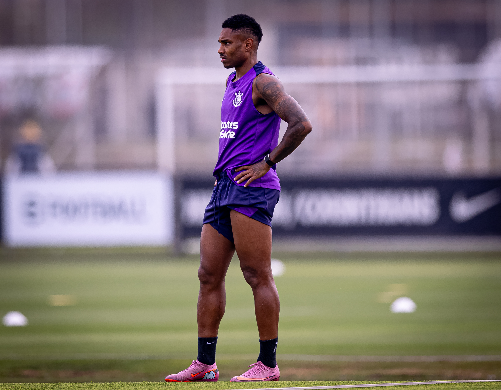

MP investiga possível infiltração de facção no Corinthians e suspeita de imóvel usado por jogadores
Além de investigar o uso de cartões de crédito e relatórios de despesas da presidência do Corinthians, o Ministério Público de São Paulo apura possíveis conexões entre o clube e a facção criminosa Primeiro Comando da Capital (PCC). A investigação foi ampliada após depoimento de Romeu Tuma Júnior, presidente do Conselho Deliberativo do Corinthians, que declarou ao MP em 14 de agosto que "o crime organizado se infiltrou" no clube e que, por conta disso, estava sofrendo ameaças por sua atuação. Promotor responsável pelo caso, Cássio Roberto Conserino suspeita que jogadores do Corinthians tenham se hospedado em imóvel que pertence a José Carlos Gonçalves, conhecido como Alemão, que é apontado em outras investigações como figura de peso no crime organizado. Em manifestações proferida no processo na última sexta-feira, o promotor pede explicações a Fausto Vera, Rodrigo Garro e Talles Magno. Ele quer saber se o trio realmente morou em apartamento que pertence a Alemão no bairro Anália Franco e se o Corinthians participou da intermediação da locação. Vale ressaltar que não há qualquer suspeita de cometimento de crimes por parte dos atletas até o momento. Eles foram questionados na condição de testemunhas. Talles já informou que, ao chegar ao Corinthians, se hospedou em um hotel e que, dias depois, locou o apartamento no qual está até hoje e que não pertence a Alemão. O promotor quer entender o porquê da escolha desse imóvel pelo clube e se há conexões mais profundas entre Corinthians e Alemão. Esta não é a primeira vez que o Timão é associado ao PCC. Segundo a Polícia Civil e o MP, dinheiro do contrato com a ex-patrocinadora VaideBet foi direcionado a empresas ligadas à facção. Outro a apontar conexões entre o clube e o crime organizado foi o ex-diretor de futebol Rubens Gomes, o Rubão, no ano passado. Também em 2024, o Corinthians foi citado em investigação que mostrou que Rafael Maeda Pires, o Japa do PCC, intermediou negociações dos atletas Du Queiroz e Igor Formiga.

Futebol masculino: Corinthians inicia semana de treinos para jogo em Recife-PE
O Corinthians voltou aos treinos nesta terça-feira (16). Após vencer o Fluminense por 1 a 0 no último sábado (13), o elenco comandado pelo técnico Dorival Júnior se apresentou no CT Dr. Joaquim Grava nesta tarde e iniciou a preparação para enfrentar o Sport, adversário da próxima rodada do Campeonato Brasileiro. A equipe corinthiana abriu a semana com um trabalho de força na academia. No gramado, após o aquecimento com movimentos coordenativos, o elenco realizou uma atividade de pressão pós-perda e outra de posse de bola. O técnico Dorival Júnior comandou um jogo de enfrentamento em campo reduzido. Um complemento de tiros de corrida foi aplicado na parte final do treino. Titular pela primeira vez na vitória do Timão sobre o Fluminense no último sábado (14), o atacante Vitinho compartilhou como estava o clima do elenco na reapresentação no CT Dr. Joaquim Grava. “Foi uma apresentação feliz depois de um resultado positivo. Estamos, passo a passo, evoluindo. Conquistando os objetivos, que é pontuar e não perder jogos. Isso traz um ambiente leve e motivante para a semana e para o próximo desafio”, disse o camisa 29. Já de olho no próximo duelo do Campeonato Brasileiro, Vitinho quer ajudar o Timão a subir ainda mais na tabela de classificação. Após a vitória no Rio de Janeiro, o Alvinegro subiu para a nona posição com 29 pontos. “Eu acho que o principal é pensar no nosso objetivo, que é pontuar. Dar sequência às nossas vitórias. Independentemente do que o adversário esteja vivendo, temos que focar no nosso objetivo, que aí nos preparamos e chegamos melhores para o jogo. Vamos encontrar adversários à nossa frente e abaixo da gente, mas o objetivo e o pensamento têm que ser os mesmos: continuar vencendo no campeonato”, ressaltou. O Timão volta a treinar na manhã desta quarta-feira (17), no CT Dr. Joaquim Grava. A partida contra o Sport será realizada no domingo (21), às 17h30, na Ilha do Retiro, em Recife-PE.